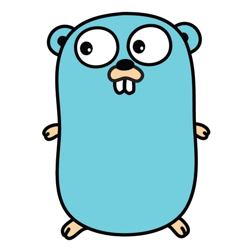
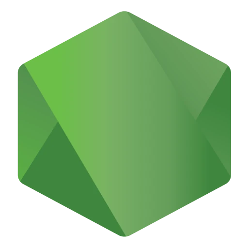
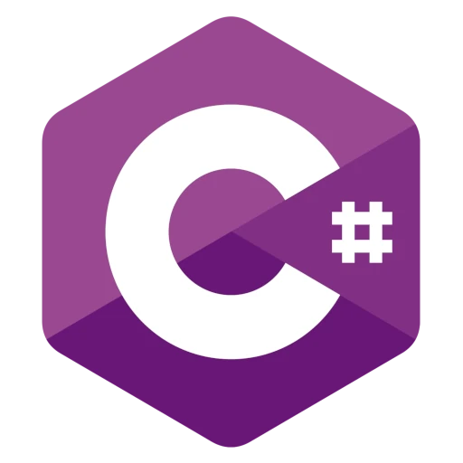
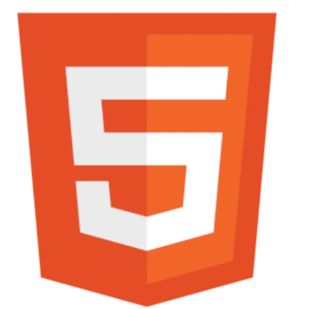
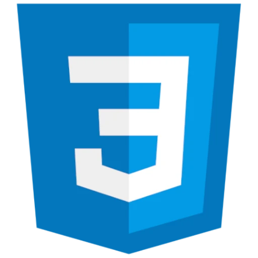
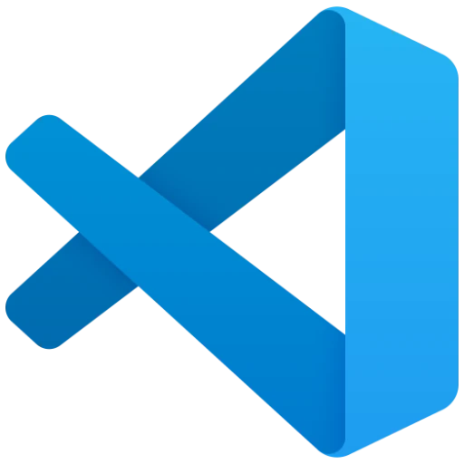

About_
Currently learning  Go-lang
Proficient in  Node JS and  C# .NET Core
Great at  HTML,  CSS, Javascript and lots of web technologies
Lot's of experience with front-end and back-end programs
Developing games with Unity and other engines in spare time
Skilled with SQL databases as well as NoSQL databases
Good understanding of the HTTP protocol and REST
Used to working with Git
Using  Visual Studio Code for most of my work (config)
Very familiar with Github
I have created peternj.ml & paracosmdev.com